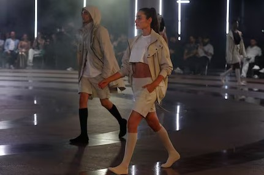

Deportes
Internacionales
Zelensky afirma que Ucrania está combatiendo contra 50.000 soldados de Rusia en la región de Kursk
El presidente de Ucrania, Volodymyr Zelensky, dijo este lunes que Rusia ha desplegado casi 50.000 soldados en Kursk, la región del sur de Rusia donde Kyiv lanzó su contraofensiva sorpresa en el verano. Las tropas ucranianas “siguen conteniendo” al “grupo enemigo de casi 50.000 hombres” en Kursk, dijo Zelensky en una publicación en Telegram. Corea del Norte envió ciudadanos para ayudar al ejército ruso a luchar contra Ucrania, dice Zelensky Un funcionario estadounidense dijo a CNN el domingo que Rusia ha reunido una gran fuerza de decenas de miles de personas, incluidas las tropas norcoreanas recién llegadas , para llevar a cabo un asalto a las posiciones ucranianas en Kursk. El funcionario dijo que se esperaba la ofensiva en los próximos días. Por otra parte, un comandante ucraniano dijo a CNN el domingo que las tropas norcoreanas estaban participando en operaciones de combate directo en Kursk, así como en operaciones defensivas en la vecina región rusa de Belgorod y en territorios ucranianos ocupados por Rusia.
¿Cuál será el rol de Trump en el escenario mundial?
El regreso de Donald Trump a la presidencia de Estados Unidos abrió una serie de interrogantes sobre lo que se puede esperar de su política exterior, con dos conflictos bélicos en curso y un mundo polarizado en el que líderes como Vladimir Putin hablan de un nuevo orden mundial. Por estas circunstancias, hay incertidumbre por el rol que va a jugar el presidente número 47 de Estados Unidos. Solange Márquez, analista internacional del Canadian Global Affairs Institute, detalla lo que podría llegar en el segundo mandato de Trump en materia de política internacional.
Nacionales
Inundaciones por ruptura de tubo matriz de EPM en Santa Cruz dejan a 457 personas damnificadas
El alcalde de Medellín, Federico Gutiérrez, entregó el primer reporte de las personas que resultaron afectadas por la ruptura de un tubo matriz del acueducto en la comuna Santa Cruz. Según la información entregada por Gutiérrez, la emergencia deja preliminarmente damnificadas a 130 familias compuestas por 457 personas. Estas están integradas por 147 niños, niñas y adolescentes, 349 adultos, 45 personas mayores y 16 personas con discapacidad. También hay 112 animales de compañía. "No hay pérdida de vidas humanas, solo hay daños materiales. Cinco personas que han tenido algún tipo de lesión leve fueron atendidas", manifestó Gutiérrez.
TransMilenio devolverá la plata de pasaje tras protestas de hinchas de Millonarios en Bogotá: lo que debe hacer
La Alcaldía de Bogotá y TransMilenio reaccionaron a las protestas de hinchas de Millonarios, quienes bloquearon la avenida NQS en la noche del 10 de noviembre exigiendo más buses del sistema de transporte. Los seguidores del equipo de fútbol salieron del estadio El Campín tras el partido entre Millonarios y Pereira. Cuando trataban de regresar a sus casas, denunciaron nula frecuencia de las rutas del componente troncal, por lo que se manifestaron en plena carrera 30. "Allí la operación (de TransMilenio) fue hasta las 10 p. m. El partido se acabó más allá de 10 p. m., y hubo problemas en la operación que llevaron a que algunas personas pagaran el pasaje y no encontraran el servicio activo", dijo Miguel Silva, secretario general de la Alcaldía de Bogotá, en diálogo con Citytv. Ante las protestas, TransMilenio dispuso de nueve buses biarticulados, con capacidad para más de 250 personas cada uno, con tal de atender a los afectados. El Distrito reconoció que fue un "error" y se comprometió a trabajar para que este tipo de situaciones no vuelvan a ocurrir. "Esto no puede pasar. O se amplía el horario de manera excepcional o se coordina con Dimayor para que el partido termine antes del fin de la operación del sistema. La gente no se puede quedar sin transporte", comentó el alcalde Carlos Fernando Galán.
Moda
“Nexis”, la primera colección de la marca de ropa de Maluma
En la noche del lunes el Edificio Inteligente de Medellín se convirtió en el escenario elegido por Juan Luis Londoño, más conocido como Maluma, para presentar Remanence, su marca de ropa.
VOGUE
Hortensia Maeso: la firma valenciana que, tras las consecuencias de la DANA, se plantea un futuro de reinvención La firma de ropa de ceremonia infantil que aún tiene su taller en el polígono de L'Alquería de Moret, en Picanya, justo enfrente del barranco que se desbordó en Paiporta, tendrá que volver a empezar (casi) de cero. “Hemos conseguido salvar parte de lo que había en el almacén de arriba, en donde teníamos el stock de producto terminado y algunos pedidos de tiendas multimarcas”, cuenta a Vogue España Yasmin Odeh, responsable de producción y de la dirección artística de la firma. Tiempo atrás, la marca había dado sus primeros pasos como Rubio Kids; una empresa familiar fundada por Hortensia junto a su exmarido, que hasta hace unos días vivía uno de sus mejores momentos. “Cuando acabó de estudiar Diseño de Moda en Estilismo e Indumentaria, mi madre empezó una firma de ropa de comunión que se propuso romper con todos los esquemas”, recuerda Odeh. “En ese momento, aquel era un sector muy paralizado y ella supo que hacía falta otro tipo de producto, más fresco”. Y se puso manos a la obra. Desde entonces, Hortensia se enfrentó a una serie de retos, tanto económicos —crisis del textil— como sanitarios —crisis del COVID—. En 2012, la separación de su entonces marido hizo que la empresa que había cofundado con tanto empeño tuviese que renombrarse. Sería rebautizada como Les enfants de l’Eden. “Rubio Kids tenía registrado Hortensia Maeso, así que al iniciar su nueva andadura, mi madre no pudo seguir usando su nombre”, detalla la hija de la cofundadora. Pero ese pequeño detalle burocrático no le impidió seguir avanzando y para evitar desaparecer, la diseñadora creó su propia empresa con muy pocos recursos, lo que le dificultaba presentar una colección a la altura de las circunstancias. Aquel nuevo proyecto fue rebautizado como Les Enfants de l' Eden by Hortensia Maeso. “Lo que legalmente sí que podía hacer mi madre era firmar con su nombre, pero no podíamos utilizarlo como marca. Íbamos a la feria y ella tenía que competir con su propia marca, que vendía los diseños que les había dejado”, continúa Odeh. No solo allí se habían quedado sus diseños: parte de la plantilla seguía trabajando para su antigua empresa. Tres años después, esta cerraría sus puertas y aquellos trabajadores acabarían volviendo con Hortensia, que además recuperó su marca. Mientras tanto, su negocio se fortaleció y con el paso del tiempo incorporó a su catálogo vestidos de invitada para mujeres y adolescentes, llevando así su propuesta más renovadora a otros sectores de la población. Esta nueva expansión le permitió fichar por una agencia de comunicación con la que iniciaría un proceso de internalización que ahora se ha visto parado momentáneamente. “El martes fuimos a trabajar; nuestro horario es de siete a tres. Menos mal, porque si nos hubiésemos ido más tarde habría sido dramático”, comparte Odeh. “Se oía que venían tormentas muy fuertes, pero no imaginábamos que ocurriría lo que ocurrió”. Su taller —al que accedieron después de unos días; antes no habían podido hacerlo porque la autovía que unía su casa con su espacio de trabajo se partió en dos y el resto de accesos estaban inundados— lo integran dieciséis mujeres y un hombre. “Al principio, pensábamos que igual solo habría unos centímetros de agua, pero no fue así. La mesa de corte no estaba; estaba enterrada en barro y se había trasladado a otra zona. La preocupación de Hortensia era cómo estaría el muestrario de mujer que iba a formar parte de la Mediterranean Fashion Week que se celebraría los próximos 15, 16 y 17 de noviembre”, recuerda la hija de la fundadora. Estas últimas horas, todo el equipo y una serie de voluntarios se dedicaron a empaquetar todos los pedidos que se salvaron del agua y el lodo para enviárselos a sus clientes. “Lo hicimos andando; los llevamos a una agencia para que los acercasen a la central porque todo empieza a oler muy mal. El resto del stock estamos tratando de moverlo a un lugar salubre con un proveedor que nos está ayudando. Nuestra esperanza son las máquinas de coser; a ver si se pueden salvar”, comparte esperanzada Odeh. Entre tanto, Hortensia Maeso sigue adelante y se propone llegar a nuevos clientes afianzando su colección de invitada para adolescente y mujer, ya que la ropa de comunión recibe cada vez menos demanda. “Los proveedores de etiquetas, portatrajes o tejidos nos están ofreciendo su apoyo para servirnos cuanto antes y algunos incluso lo están haciendo antes de tiempo. Iniciamos ahora una carrera de fondo para poder servir a finales de febrero. Sigue la campaña. Nuestras tiendas están funcionando con total normalidad”, concluye.
Tendencias de farandula
El comediante Lokillo brilla en la Red Bull 'Batalla 5 Vidas' y se corona campeón en Chile
El miércoles 6 de noviembre Red Bull realizó uno de sus torneos más significativos de freestyle en la ciudad de Santiago de Chile . Como invitado espacial 'Lokillo Flórez' Esta 'Red Bull Batalla 5 Vidas' se diferencia de las demás por su forma de competir. En los dos últimos dos años Red Bull se ha destacado por realizar batallas de freestyle en toda latino américa, en la que Colombia ha resaltado por sus participantes como 'Valles T', 'Coloso' y el comediante 'Lokillo' Flórez. El 'Rey de la trova' como le dicen algunos, 'Lokillo' Flórez de ser trovador pasó a ser comediante y después de un tiempo vuelve a improvisar en los escenarios de Red Bull.
Blessd y Ryan Castro reaccionan a críticas de '+57': "No me den responsabilidad"
La canción +57, colaboración entre algunos de los artistas más populares del reguetón colombiano como Karol G, J Balvin, Maluma, Feid, Ryan Castro y Blessd, ha generado una fuerte polémica desde su lanzamiento. Mientras que la canción ha acumulado millones de reproducciones en plataformas como YouTube, las críticas sobre su letra no han tardado en aparecer, alcanzando tanto al público en general como a figuras de la industria. El Instituto Colombiano de Bienestar Familiar (ICBF) y la cantante Fariana han sido algunos de los críticos más polémicos. Ante este escenario, Blessd y Ryan Castro no han dudado en expresar su opinión de manera directa. La revista Rolling Stone calificó a +57 como un “desastre” y publicó un artículo donde criticaba severamente el contenido de la canción. Aunque la publicación fue retirada de la plataforma poco después, el mensaje ya había impactado. Además, Fariana, una de las exponentes de la música urbana en Colombia, señaló que su ausencia en la colaboración se debe a la falta de apoyo hacia las mujeres en la escena urbana del país. Blessd, cuyo nombre real es Stiven Mesa Londoño, ha sido uno de los primeros en responder a estas críticas. En su cuenta de X, el artista publicó un mensaje que dejó clara su postura: “Mi amor, críe usted sus hijos que yo estoy es trabajando y haciendo música. No me den la responsabilidad de crianza, eso hágalo usted. Póngale la vaca Lola que yo hago es reguetón, ahí me disculpa.” Por su parte, Ryan Castro también hizo uso de X para expresar su opinión frente a la polémica. Con un tono relajado y haciendo referencia a un conocido meme, el artista afirmó: “Desde que yo esté bien, que ruede el mundo a mi alrededor listo. Nada asara parcero, critiquen lo que quieran que eso a mí ¡no me importa!”.